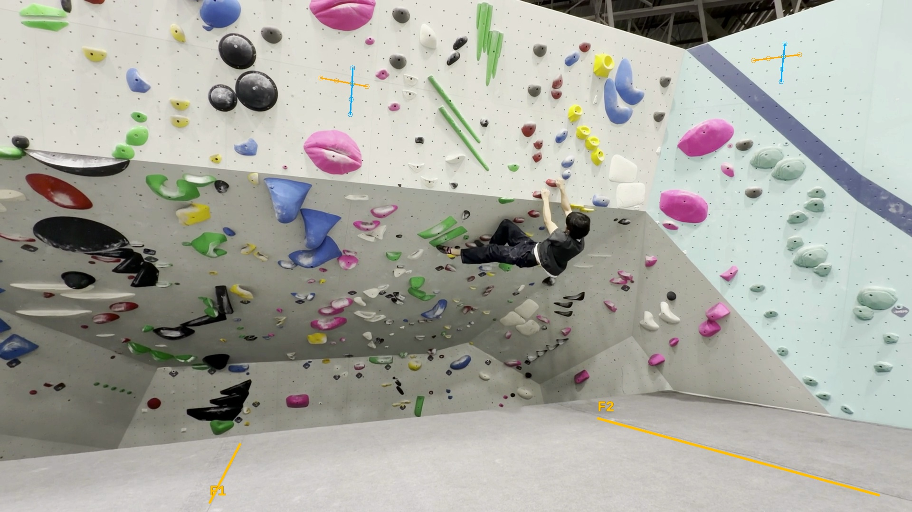
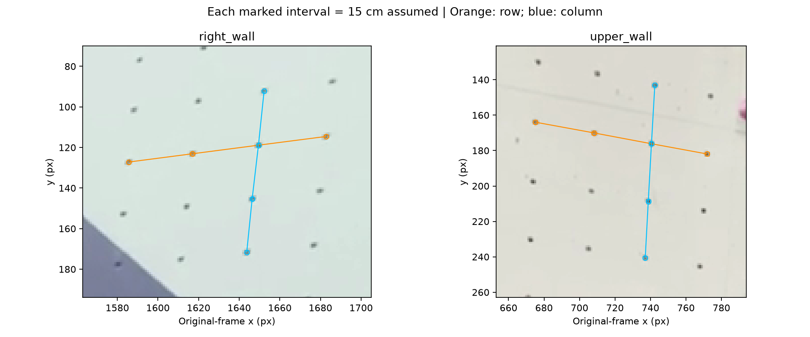
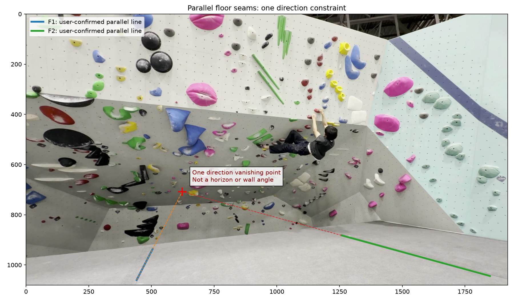

### Inputs and their meaning - Adjacent-hole center spacing: **15 cm**, a user assumption, not a Movement specification or measurement. - Filmed climber height: **173 cm**, reported by the user. - Target user height: **190 cm**, kept separate for later retargeting. - Default body ratios give model priors only; the climber's bent image height is not used as a ruler. ### Local scale from visible holes The overlay marks the exact adjacent-hole pairs on the original video frame, before multi-frame compositing. Each sample uses `pixel distance / (number of intervals * assumed spacing)`. Row and column are image-grid directions, not world-horizontal or world-vertical axes. | Wall region | Grid direction | Median local px/cm | Pairs | |---|---|---:|---:| | right_wall | column | 1.777 | 3 | | right_wall | row | 2.188 | 3 | | upper_wall | column | 2.166 | 3 | | upper_wall | row | 2.189 | 3 | Perspective makes these scales vary with position and direction. No single value is assigned to `PX_PER_CM`. The spacing assumption does not establish a square grid or angles between grid directions. ### What the parallel floor lines tell us The user identified F1 and F2 as parallel in the scene. Their image-line extensions give one vanishing point: **(622.6, 708.1) pixels**, in frame-450 image coordinates. This is a directional perspective constraint, not the floor horizon and not a wall-angle estimate. Endpoint selection, lens distortion and curved mat seams affect the estimate. To estimate a wall-to-floor angle, we still need the floor normal and the wall normal in the same calibrated camera coordinates. For example: add a second floor-line family in another direction, camera intrinsics, and known wall-grid geometry. A known vertical direction with camera calibration is another way to constrain the floor normal. One known human height does not supply these by itself. ### Pipeline behavior Section 4C saves assumptions, body priors, local measurements and the floor constraint. Section 8 shows them before the existing IK gate; Section 10 exports them. Contact predictions continue in image coordinates. Metric IK remains pending until panel geometry and motion contacts are reviewed. No wall angle, 3D wall reconstruction, physical success probability or contact-accuracy improvement is claimed. Method references: [Single View Metrology](https://ora.ox.ac.uk/bookmarks/uuid%3A9b99df78-df75-49a9-a1b8-1b38e1b173a8), [OpenCV planar homography](https://docs.opencv.org/4.x/d9/dab/tutorial_homography.html).


